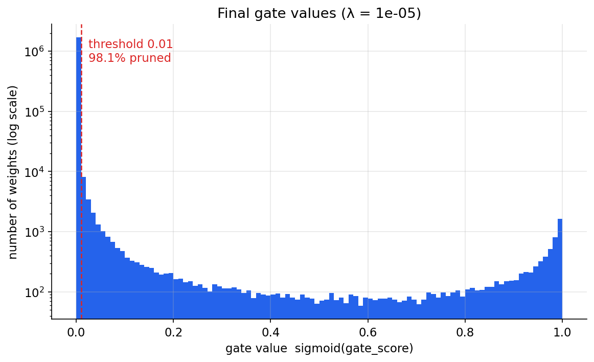
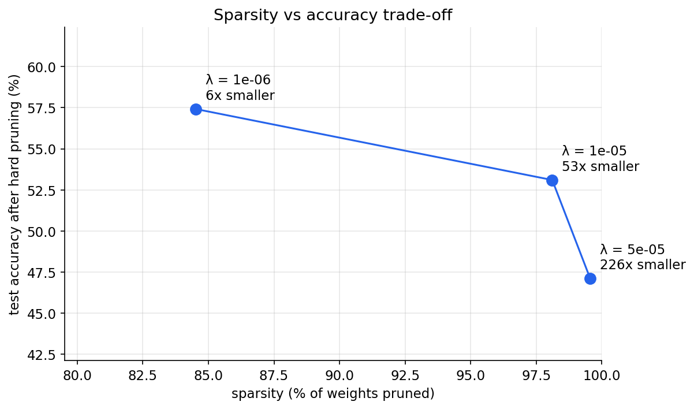
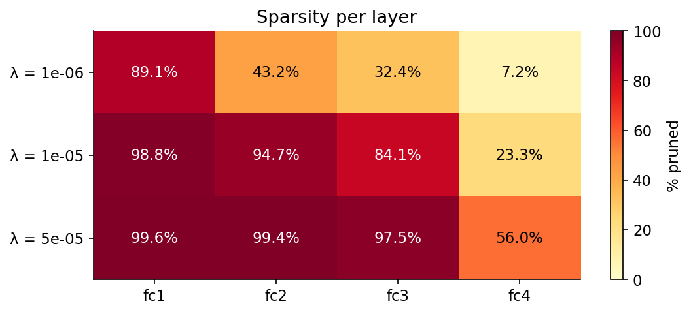

Self-Pruning Neural Network
A CIFAR-10 classifier that learned to delete most of its own weights while it trained. The pruned models are small enough to run right here in your browser, with no server involved.
Try it
Or pick a CIFAR-10 test image. Categories: airplane, car, bird, cat, deer, dog, frog, horse, ship, truck.
Loading models…
Results
Each model was trained for 30 epochs with a different penalty strength λ. Accuracy is measured on the 10,000 CIFAR-10 test images after every gate below 0.01 was set to exactly zero, so it is the accuracy of the truly sparse network.



How it works
Every weight w is multiplied by a learnable gate g = sigmoid(s) between 0 and 1. Training minimises
cross-entropy plus λ · Σ g, the L1 norm of all gates.
The L1 penalty pulls every gate towards zero with the same steady force, however small the gate already is. A connection survives only if it helps the classification more than that pull costs. Most raw-pixel connections don't, so they close completely, and the network ends up using a few percent of its original weights.
Making this work needed three things: a higher learning rate for the gates (Adam moves each parameter only about
lr per step), no BatchNorm after gated layers (it would silently undo uniform gate shrinkage), and hard-pruning
before measuring accuracy.